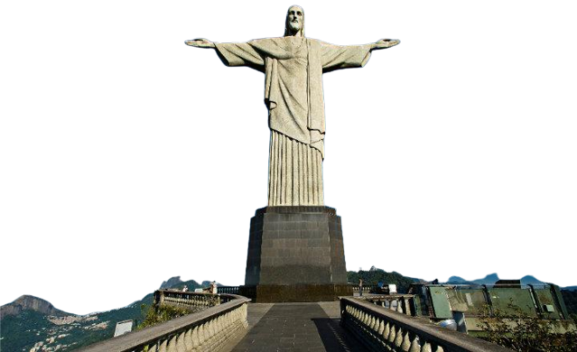

El yacimiento arqueológico de Chichén Itzá se abre en medio de la inmensa selva de la península de Yucatán y cubre un área de 6.5 km2. Basta ver nada más acceder al recinto la espectacular pirámide de Kukulcán para comprender que este fuera uno de los lugares elegidos para incorporarse en la lista de las nuevas siete maravillas del mundo. La geometría de la pirámide guarda el secreto del dominio que tenían sobre la astronomía los mayas. Algo que se puede comprobar con el descenso de la serpiente durante el equinoccio de otoño y de primavera. La cancha del juego de la pelota, la mayor de México, con bajorrelieves donde se representan las decapitaciones de jugadores, los baños de vapor o el observatorio astronómico, con puertas y ventanas alineadas con los astros celestes en determinadas fecha, resultan igualmente espectaculares.
Esta serie de fortificaciones de piedra, ladrillo, madera y tierra apisonada que recorre las fronteras históricas del norte de China construida entre el siglo V a. C y el XVI sirvió como protección para el imperio chino en la histórica frontera del norte del país, en la que fue recurrentemente atacado por nómadas de Mongolia y Manchuria.
Se trata de una estatua de 30 metros de altura y diseño Art Decó que corona la montaña de Corcovado representando el cuerpo de Jesús de Nazaret. Esta obra, inaugurada en 1931 fue fruto del trabajo de las manos del escultor polaco-fracés Paul Landowski y el ingeniero brasileño Heitor da Silva Costa, quienes también contaron con la colaboración del francés Albert Caquot y del artista rumano Gheorge Leonida, siendo este último responsable de la cara de Cristo.
Se trata de su construcción más famosa y reconocible: el anfiteatro Flavio o Coliseo. Esta edificación, la más grande jamás llevada a cabo en su categoría, data del siglo I y actualmente es una de las más representativas de la época del Imperio romano así como de la Antigüedad clásica en su conjunto. Se estima que el Coliseo podría albergar entre 50.000 y 80.000 espectadores, que podían acudir hasta él para ver representaciones públicas como simulacros de batallas navales o dramas basados en la mitología clásica así como concursos de gladiaores.
Se trata de la ciudad inca del Machu Picchu, en la región de Cusco, en Perú. Situada en la cresta de una montaña a 2.430 metros sobre el nivel del mar, esta construcción de estilo clásico Inca, que los arqueólogos relacionan con una finca pensada para albergar al emperador inca Pachacuti, cuenta con tres estructuras principales, el Inti Watana, el Templo del Sol y la Sala de las Tres Ventanas, y varios edificios periféricos, de los que gran parte han sido reconstruidos para dar una mejor idea a los turistas de cómo era la ciudadela original.
La ciudad de Agra, en el estado Uttar Pradesh de India acoge al segundo de los monumentos designado como las 7 maravillas del mundo moderno declarado también como bien Patrimonio de la Humanidad por la Unesco. Se trata del Taj Mahal, una construcción funeraria levantada en el siglo XVII bajo encargo del emperador Shah Jahan en honor a su esposa favorita, Mumtaz Mahal. De hecho, la tumba es la pieza central de un complejo de 42 acres que incluye una mezquita y una casa de huéspedes además de los jardines.
Petra es la primera de las siete nuevas maravillas del Mundo Moderno. Esta ciudad de Jordania, originalmente conocida como Raqmu, es famosa por su arquitectura excavada en la roca además de por sus avanzado sistema de conductos de agua. Petra, constituida posiblemente ya en el 312 a.C como la capital de los nabateos árabes, es un símbolo de Jordania, además de uno de los principales atractivos turísticos del país, más, desde que en 2007 fuese elegida como una de las 7 maravillas del mundo moderno.